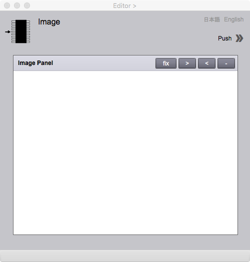

Image
Image page enables the selection of images and photographs as attributes of a feature. A feature has a location of images as URL. This text explains about the location of images at first, how to use Image page at second, and finally about fields and buttons in Image page.
Location of images
Images shall be put in a folder called "images" under the project folder. A feature holds an URL as a relative path of the image as the value of the image attribute.

Figure 1. Initial screen of Image page
This page is the initial screen of Image page appeared by the selection of imageURL attribute from Attribute Type List in Editor page.
Figure 2. Image page with a list of thumbnails
A list of thumbnails appears by clicking >> mark at the right upper corner. By selecting a folder of images, a list of thumbnails appears.

Figure 3. Image page in which image are selected from a list of thumbnails.
A selected image appears by clicking the thumbnail in the list. This is added as an attribute of a feature by clicking "add" button at under Attribute ID Value List in Editor page.
Fields
Image folder
A name of the folder in which images are stored.
Butons
Push >>
A box for the list of thumbnails appears by clicking ">>". A box disappears by clicking "<<".
off/on
Scroll of the image is possible by clicking "off" button ("off" is replaced by "on"). Scroll is possible during the button is "on".
>
Image scale is smaller by clicking this button.
<
Image scale is larger by clicking this button.
-
Initialize the image scale by clicking this button.
日本語
今あなたが読んでいるドキュメントが表示されます．
English
You can read the tutorial written in English.